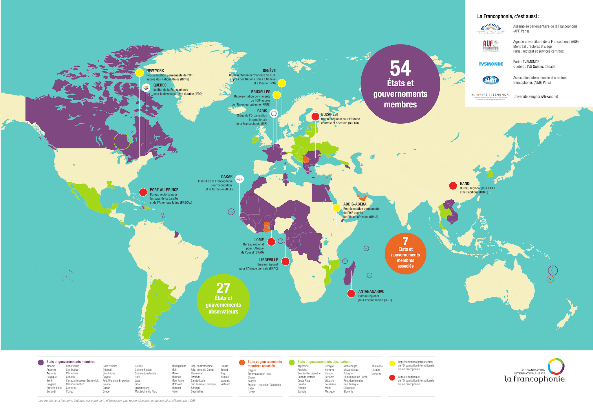

A Francofonia
Presente em quatro continentes como língua oficial, administrativa ou de maior uso, a língua francesa é falada por cerca de 300 milhões de pessoas, o que equivale a 4% da população mundial. Para facilitar a integração entre essa comunidade, existe um órgão mediador de cooperação, a Organização Internacional da Francofonia (OIF).
A OIF tem 61 países membros e 27 observadores. Seu objetivo é contribuir para a melhora da qualidade de vida dos países membros e ajudá-los a se tornar protagonistas do seu desenvolvimento. Para que isso ocorra, a entidade fornece apoio na elaboração e na consolidação de políticas internas. Para potencializar esses resultados, o bloco realiza também ações de política internacional e cooperação multilateral entre os estados membros.
O continente africano é o que possui o maior número de membros na organização. Segundo a OIF, 59% dos falantes de francês estão na África. Países como Costa do Marfim, Marrocos e Madagascar estão dentro do bloco e são, portanto, francófonos (falantes de francês).
O Marrocos, por exemplo, possui como línguas oficiais apenas o berbere e o árabe. Contudo, o francês é utilizado para os negócios, a diplomacia e o governo. Por um lado, a França é o maior destino das exportações marroquinas e, por outro, é o segundo país que mais importa do Marrocos. Nesse caso, por mais que a proximidade geográfica seja importante, o fator linguístico também parece ser impactante nas escolhas de parceiros comerciais.
Pesquisas empíricas relatam que, quando existe uma língua em comum entre as partes de uma negociação, os resultados são melhores: até 44% a mais de trocas comerciais e de investimentos*. Assim, pode-se concluir que o fator linguístico (e, consequentemente, cultural) é um ponto estratégico para as empresas que buscam atingir melhores resultados.
A confiança entre as partes é indispensável e a proximidade cultural somada à compreensão da realidade alheia ajudam nesse sentido. A Français Café ensina francês, aspectos culturais de países francófonos e cria condições para o aluno vivenciar essa realidade. Ficou interessado em ter um diferencial no mercado e ser um agente globalizado? Entre em contato com a gente e agende uma aula experimental pelo número (21) 983775677 ou clique aqui.